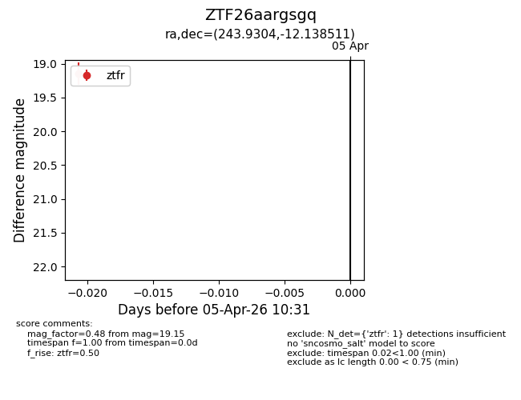
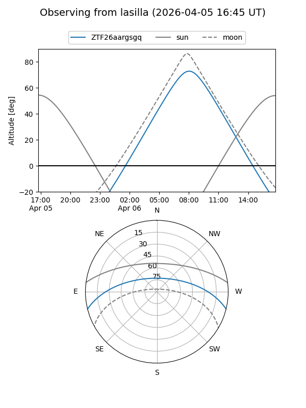
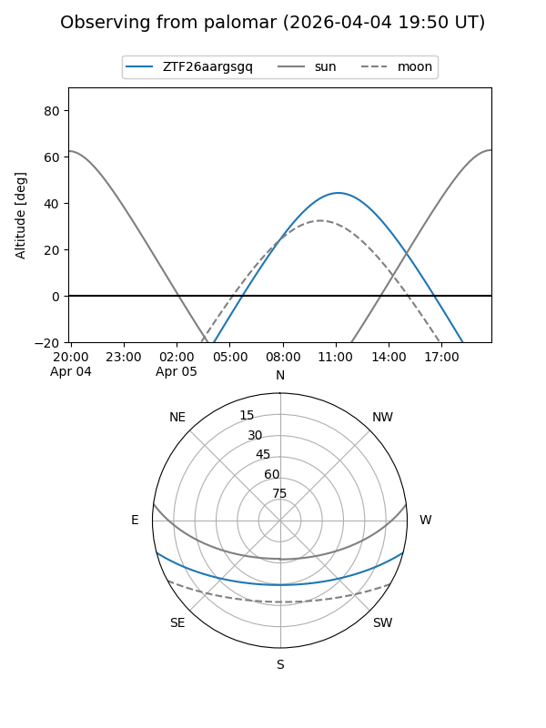

ZTF26aargsgq
Target ZTF26aargsgq at 2026-04-05 10:34
Aliases and brokers:
FINK: link
Lasair: link
ALeRCE: link
alt names
ZTF26aargsgq (ztf,fink_ztf)
Coordinates:
equatorial (ra, dec) = 243.9304,-12.13851
equatorial (HMS+DMS) = 16:15:43.29,-12:08:18.64
galactic (l, b) = (1.3661,+26.79795)
Flags:
Photometry:
last ztfr=19.15
1 ztfr detections
Lightcurve

Visibility


Additional plots